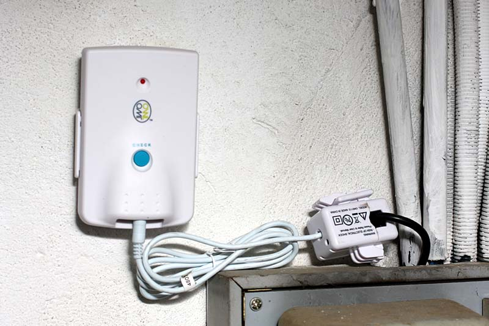
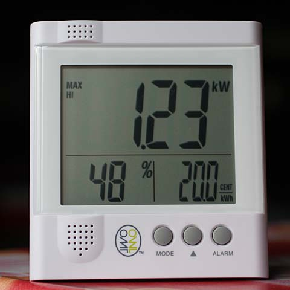
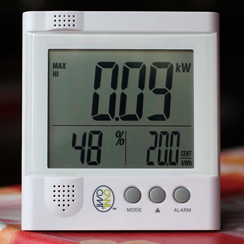
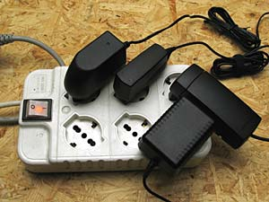
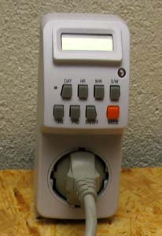

Batteries & energy
How to save electrical energy at home.
How to save electricity in your home. "DIY" by R.Chirio
Page index
Considerations
November 2012
Are you the type who turns on the electric heater at the slightest cold? or as soon as it gets hot you turn on the air conditioning? If so, forget about it, you don't have the ability to think about energy saving.
Piero Angela is right to say that the cost of energy is still too low to be interested in energy saving.....
The fundamental concept that few understand is that energy is not infinite, what you waste today will not be available tomorrow....for others.
You must therefore implement as many precautions as possible to reduce consumption, first eliminate all those useless electrical devices, which kept on have only a decorative function.
Turn on only the various devices when needed and then don't forget to turn them off when their use is finished.
The appliance that stays on longest is certainly the television, clearly it keeps you company, especially for elderly people, but you need to learn to turn it off, alternating other activities like reading or exercise, walks, DIY...etc etc.
A TV on for 6 hours a day costs from 40 to 70 euros/year of electricity. Important to choose a LED TV with low consumption without exaggerating with the dimensions that greatly increase the power consumed.
POWER METER WIRELESS OWL CM160 USB Total electrical consumption measurement directly on the meter.
To start saving energy, the first step is to know how much energy is consumed.
With the "Power Meter Wireless" instant power meter we can easily monitor electrical energy consumption, placing the display in a convenient spot where the whole family can read the absorbed power value, it becomes easy and natural to try to reduce the consumed value, also because it is possible to display the cost in Euros.

First step: connect the current probe to the main black cable, which goes from the meter to the home system, we'll then connect the probe to the wireless transmitter running on battery (3 AA). From a few mA to several Amps, they will be read and transmitted to the receiving display.
Current x voltage will give us the power dissipated in W, or better in KW.

In this case the consumption of my system is displayed and the 1kW bathroom electric heater makes itself felt.....................

Turning off almost everything, consumption becomes low, about 90W; it still includes the solar system controller, the intercom/doorbell transformer, the antenna amplifier power supply, the anti-theft system, and the router—all devices that I can't easily turn off.
We are all inclined to think about saving energy, but often we forget to do it. This device is needed to remind us how much we're consuming in real time......so we can take appropriate action, such as using low-consumption lamps, using class A, A+, A++ appliances, etc., etc.
It WIRELESS POWER METER OWL CM160 USB is available in Italy from this seller:
or in IRELAND from:
http://purchase.ie/energy-saving?wpcopage=2
SOME ADVICE TO REDUCE ELECTRICAL CONSUMPTION.
Lighting
- Eliminate all filament or halogen lamps.
- Use only low-consumption neon lamps, branded and certified for Class A or better LED lamps.
- Install low-consumption lamps inside reflectors to better direct the light, for example only on the dining table or on the desk.
- Avoid diffuse lighting throughout the room, and prefer spot lighting only where light is needed.
- Use 220V LED lamps to illuminate stairs, courtyards and passages outside.
- Avoid lights on all night, better use infrared motion sensors, calibrated for 30 sec. of activation.
Washing machine
- Do washing at low temperature (40°) choose branded models certified for Class A Consumption.
- Try to have a full basket for each wash.
- Turn on preferably in the evening hours or on weekends when electricity rates are lower.
Refrigerator
- Choose branded models with certification for Class A Consumption
- Open the doors as little as possible.
- Make sure there is good ventilation at the back of the refrigerator.
Electric ovens
- Choose branded models with certification for Class A Consumption
Electric boilers (water heaters)
- Choose branded models with certification for Class A Consumption and use for solar systems.
- If possible use gas heaters or thermal solar panel systems.
Computer
- A normal desktop PC, together with the LCD monitor, consumes 150 to 500W/h, if kept on for 4 hours a day for 300 days a year (a fairly realistic assumption) consumes in a year 500 x 4 x 300 = 600KW at the cost of 0.25€/KW making 150€ of electricity/year.
A notebook with performance similar to Desktop consumes 40W/h annual cost comparison=48KW x 0.25= 12€/year
Also the notebook does not need an uninterruptible power supply since it already has a battery inside for a runtime of 1-3 hours. It's definitely the best solution for the whole family.
- Wireless Routers are always connected even during the night, better to turn off and on again only when needed.
TV monitor
- Choose branded models with certification for Class A Consumption
- Move to 18-24" LCD LEDs that consume 15-30W. Large LCD (plasma) from 42" - 60" consume 600-800W as well
Cell phone charger
Also for cell phone charging transformers there is the bad habit of leaving them always plugged into the 220V outlet.
They can impact at an annual cost level of 2-5 euros light cost.
Good idea then to use a power strip with a switch to turn off when it's not necessary to charge the phones.
Even better, put an electronic timer to turn on at night, say from 3 to 7 in the morning.
Generally all modern mobile phones charge in 3-4 hours.

Doorbells and intercom
- If possible avoid the video intercom, the power supply always plugged in consumes 20-30W/h always connected for 24 hours.
- The doorbell transformer also consumes 5-10VA, use very low consumption models or even battery-powered.
- Eliminate doorbells with illuminated labels, just use the button with a clear label without illumination.
Power supplies for antennas and satellite dishes
- If possible use a single low-consumption power supply, it is useful to install a timer that turns off power during the night.
- Even better to have all multimedia systems under a single switch, so that if the TVs are off the power supply under the roof also remains off.
Anti-theft and security systems.
- Use systems certified for low power consumption, and peripherals that use lithium batteries for long life.
- Surveillance cameras, use the new very-low-consumption models and DVR recorders with solid-state memory. Prefer illuminators with infrared led.
Programmable electronic timer.
Very useful to apply the timer to all those devices that are generally constantly connected to the mains.
It is possible to program the shutdown of doorbells and intercoms during the night, for example from 24:00 to 7:00
Schedule charging for only 2-3 hours a day for cell phones and other devices under charge.
For example I use it to keep the Solar Panel control unit off after sunset until 10:00 the next morning when the sun returns to warm up.

Conclusions
- By following some of the advice given above it is conceivable to see noticeable reductions on the energy bill.
- However, it must be the will of each family member to think about reducing consumption to the bare minimum and remember to use intelligence to do things well the first time.....
Continue.....
© Roberto Chirio: all rights reserved.